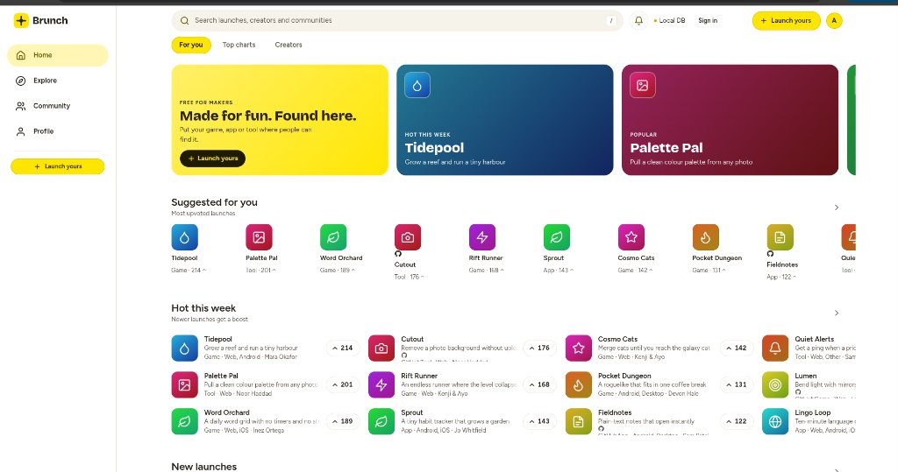

Case 01 / Indie maker launchpadCommunity board
Brunch
A product showcase and discovery platform for indie makers and side projects, featuring upvoting dynamics, curated charts (“For You”, “Top Charts”), and creator profiles.
- Discovery
- Curated “For You” and “Top Charts” views organize maker and side-project discovery.
- Interaction
- Upvoting dynamics and creator profiles connect projects with their audiences.
- Delivery
- A typed Next.js and React interface styled with Tailwind CSS.
For YouDiscovery view
Top ChartsCurated ranking
ProfilesCreator pages
